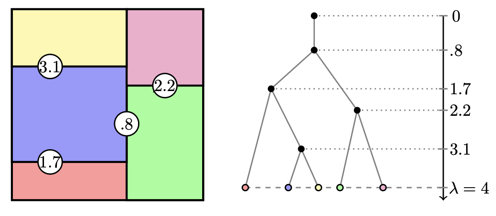

Random forests are one of the most widely used tools in machine learning: they work by randomly dividing the input space into regions and making predictions based on the data in each region. The most popular implementations make these divisions along the coordinate axes — that is, using one covariate at a time. My research investigates what happens when we allow more general, oblique splits that cut along arbitrary linear combinations of features, and uses the mathematical theory of random tessellations from stochastic geometry to analyze the resulting algorithms.

The Mondrian process is a mathematically elegant model for building random forests: it recursively partitions space with random axis-aligned cuts, and the resulting trees can be used for both prediction and kernel approximations. My work used the fact that the Mondrian process is a special case of the much richer stable under iterated tessellation (STIT) framework from stochastic geometry, which allows cuts in arbitrary directions. By bringing tools from this field into machine learning, we can analyze a wide family of random partition models, characterize all kernels they can approximate, and obtain consistency guarantees for the resulting estimators.
Axis-aligned splits ignore correlations between features — a fundamental limitation when data has structure along directions not aligned with the coordinate axes. I proved that a broad class of random forests with oblique splits, including STIT forests and forests derived from Poisson hyperplane tessellations, achieve minimax optimal convergence rates in arbitrary dimension. These are the first such results for oblique random forests, and the proofs rely crucially on stationary random tessellation theory. Further work establishes a precise lower bound showing that axis-aligned Mondrian trees are provably suboptimal for functions that depend on a low-dimensional relevant subspace of the input — and quantifies how much can be gained by orienting splits toward the right directions.
A practical challenge in high-dimensional data analysis is identifying which linear combinations of features actually matter. The TrIM (Transformed Iterative Mondrian) algorithm addresses this by using an initial Mondrian forest to estimate a matrix projecting onto relevant directions in the feature space, then re-running the forest using these better-oriented splits — and iterating to further improve performance. We prove consistency guarantees and convergence rates for this procedure.
A key insight from extending the Mondrian process to the STIT framework is that the choice of cut directions determines which kernel a random partition model approximates. My work characterizes all kernels that stationary STIT processes and their mixtures can approximate, establishes uniform convergence rates for the approximation error, and gives a closed-form expression for the density estimator arising from an infinite STIT forest — enabling precise comparisons between the Mondrian forest, the Mondrian kernel, and the Laplace kernel. Building on this foundation, further work studies what happens when a uniform random rotation is applied to the input space before running the Mondrian process: this yields a rotation-invariant kernel, for which we derive a closed-form expression and prove uniform convergence rates using stochastic geometry. This rotation-invariant variant shows improved empirical performance on datasets with no preferred coordinate directions.